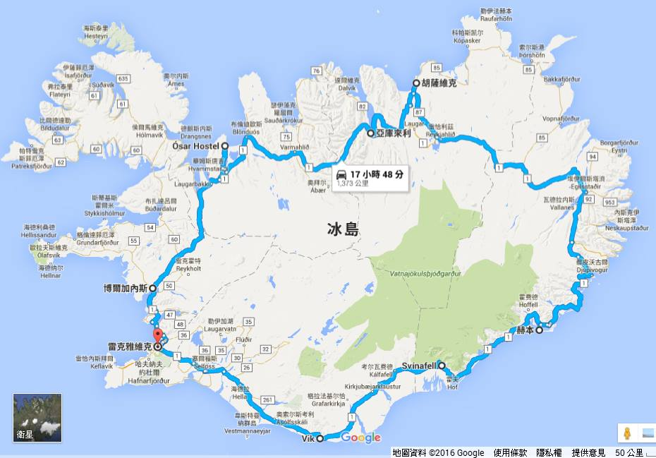

03/21
Day 1 中國國際航空，18:45桃園機場起飛，22:10抵達北京
03/22
Day 2 中國國際航空，13:50北京起飛，16:30抵達瑞典斯德哥爾摩
住宿Good Morning Arlanda (阿蘭達早安旅館)
03/23
Day 3 北歐航空，08:35斯德哥爾摩起飛(中轉奧斯陸)，中午12:00到達冰島
辦理租車，藍湖溫泉 +舊區港口跳蚤市場Kolaportið +雷克雅維克大教堂
住宿Smáragata Rooms (斯瑪拉加塔羅姆斯民宿)
03/24
Day 4 金圈之旅
凱瑞斯Kerið火山口湖、黃金瀑布Gullfoss、蓋錫爾間歇泉Geysir、辛維利爾國家公園Pingvellir
住宿在Guesthouse Garun Heidmörk (加倫海德莫克賓館)
03/25
Day 5
Hella赫拉小鎮、Seljalandsfoss瀑布、斯科加瀑布(Skógafoss)、迪霍拉里海岬(Dyrhólaey)、Reynisfjara黑沙灘、Solheimasandur Plane Wreck
住宿維克鎮Vik Hvammból Guesthouse (瓦姆波爾賓館)
03/26
Day 6
索爾黑馬冰川(Sólheimajökull) 3小時冰川徒步團12:30約3小時
住宿冰河湖附近 Guesthouse Holmur (赫爾瑪賓館)
03/27
Day 7
瓦特纳-藍冰洞13:00(2.5小時.傑古沙龍冰河湖邊的Jökulsárlón Cafe集合出發)
住宿Guesthouse Hvammur (哈莫賓館)
03/28
Day 8
Hofn吃龍蝦餐，東部峽灣風景遊覽
住宿Egilsstadir Birta Guesthouse (埃伊爾斯塔濟 波爾塔賓館)
03/29
Day 9
終於看到極光了！凌晨12點的靜夜天空！
黛堤瀑布Dettifoss、米湖Myvan、上帝瀑布Godafoss
住宿米湖 Öndólfsstaðir Farm B&B (昂多夫斯塔維農場住宿加早餐旅館)
03/30
Day 10
阿庫雷里 炸魚薯條，城鎮一日遊
住宿阿庫雷里 Apotek Guesthouse Akureyri (阿庫雷里阿波泰克旅館)
03/31
Day 11
斯奈山半島風景遊覽
住宿Guesthouse Hof（霍夫旅館）
04/01
Day 12
住宿雷克雅維克Guesthouse Helga Reykjavík（海爾加雷克雅未克賓館）
04/02
Day 13 北歐航空，中午11:40凱夫拉維克機場Keflavíkurflugvöllur起飛(中轉奧斯陸)，17:45抵達斯德哥爾摩
住宿 斯德哥爾摩 Unique Hotel 非凡旅館
04/03
Day 14 中國國際航空，19:10斯德哥爾摩起飛，09:40到達北京
斯德哥爾摩 一日遊
飛機上跨夜。
04/04
Day 15 中國國際航空，14:05北京起飛，17:10抵達台灣